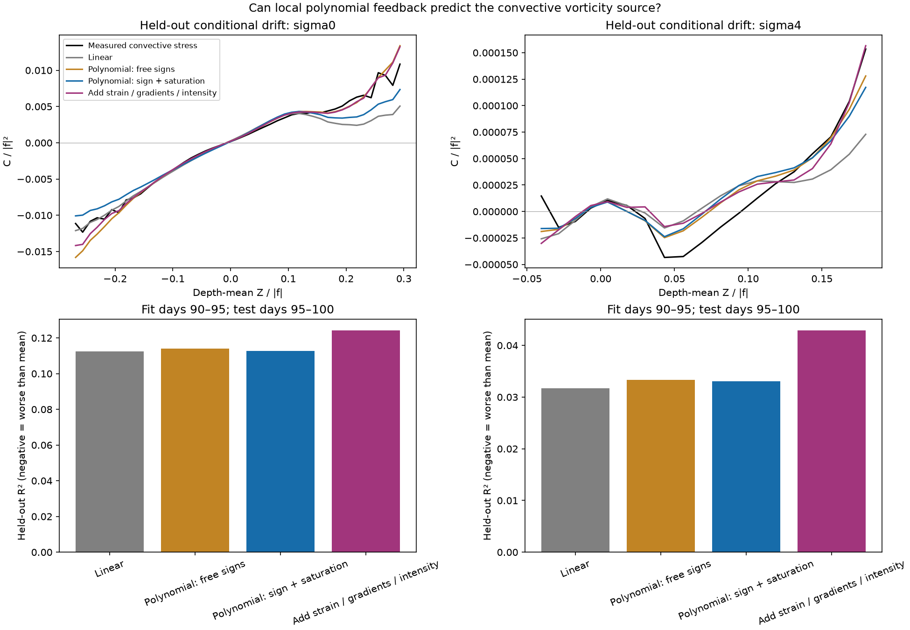
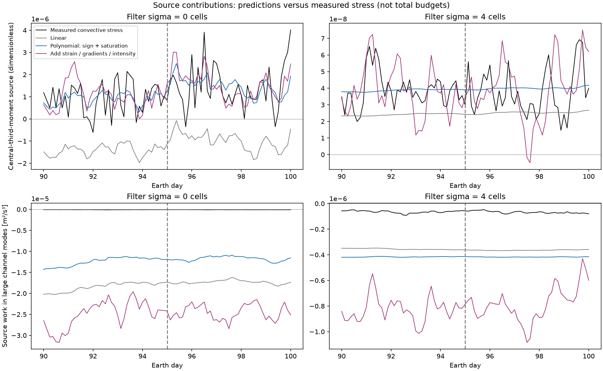
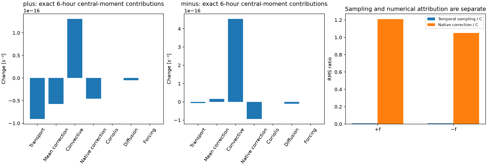

Does convection supply the polynomial feedback?
Partial support for the quadratic contribution to vorticity asymmetry; no support here for a stabilizing cubic term. The simple polynomial fails as a predictive closure of the measured convective source. This test uses existing heated Breeze output, with no new simulation and no change to heating, cap or rotation.
The flow being tested: days 90–100
· Open movie · Movie scales and metadata
Existing same-run movie, reused without rerendering: vorticity above passive tracer, at 19.69, 59.06 and 100.31 km above the bottom. Fixed color scales across time. Positive ζ/f is cyclonic. Dry anelastic, 55°N f-plane, beta=0; 256×256×64 cells in a 6000×6000×120 km channel; bottom heating 162 W/m². These are mature-vortex data, not the period when the vortex first emerged.
What was actually tested
Define the density-weighted depth-mean horizontal velocity U, its vertical vorticity Z, and the convective Reynolds stress Rᵢⱼ = ⟨u′ᵢu′ⱼ⟩ρ. The resolved convective source in the depth-mean vorticity equation is
C = −curlₕ(divₕ R).
Heating enters through these three-dimensional velocity correlations. With impermeable top and bottom, the density-weighted depth integral of constant-f stretching vanishes. The native discrete budget also retains mean transport, numerical reconstruction corrections, Coriolis and diffusion separately; none is absorbed into C.
With z = Z/|f| and q = C/|f|², the trial model is
q̂ = a₁P₀(z) + a₂P₀(h²∇²z) + b sign(f) P₀(z²) − c P₀(z³).
P₀ subtracts the full-channel mean of each feature; the measured target mean is retained as part of the error. h is the 23.4375 km grid spacing. The coefficients are fitted to Breeze, not copied from the separate 2D experiments. The linear baseline uses the first two terms. We compare unrestricted b,c with b≥0,c≥0, and an extended model with strain, vorticity gradients and convective intensity.
Fit: 40 three-hourly states on days 90≤day<95. Test: 41 states on days 95≤day≤100. Fit and primary scores use the central 80% of the channel; full-channel and wall scores are also retained. One fixed sensitivity filters the fields and convective stresses with Gaussian width four cells (93.75 km). It is not a resolution-convergence test, and barotropic subfilter stress is not folded into C.
Prediction on the later five days
| Model | Source R², unfiltered | Source R², four-cell filter |
|---|---|---|
| Linear baseline | 0.1124 | 0.0317 |
| Polynomial, unrestricted signs | 0.1140 | 0.0333 |
| Polynomial, cyclonic bias + saturation constraint | 0.1128 | 0.0331 |
| Add strain, gradients and intensity | 0.1243 | 0.0429 |
The polynomial barely improves spatial prediction over the linear model. In the unrestricted fit, b is positive but c is negative: the fitted cubic contribution amplifies rather than saturates. Requiring saturation pushes c essentially to zero, both before and after filtering. This is evidence against the proposed saturation closure over the sampled range, not evidence that the full Breeze flow lacks a saturation mechanism.

Conditional averages can look convincing despite poor pointwise prediction. Sparse tail bins are descriptive, not independent statistical evidence. All coefficients and bin counts are in the downloadable records.
A useful signed-moment signal, but incorrect energy transfer
The constrained polynomial predicts the held-out mean convective contribution to the interior central third moment within about 2.3%: 1.477×10⁻⁶ versus 1.445×10⁻⁶ in normalized units. The linear model predicts the wrong sign. The polynomial gets the instantaneous sign in 95% of test snapshots, but its normalized time-series error is still 55%. Matching the average is not a closed third-moment budget or a prediction of normalized skewness.
The same model fails to predict source work in the largest channel modes. The measured mean contribution is −6.87×10⁻⁸ m²/s³; the unfiltered polynomial predicts −1.17×10⁻⁵. After filtering, it still overestimates the magnitude by about sixfold. This comparison projects over the full channel, including walls outside the fit region, and the observed net work is small. It is a failed transfer test, not a complete energy budget or proof that convection always removes large-scale energy.

Vertical dashed line: training ends. Upper panels: interior central-third-moment source. Lower panels: full-channel work in modes with horizontal wavenumber magnitude ≤2(2π/Lx). These are contributions from C alone, not total tendencies.
The positive quadratic coefficient is therefore an empirical lead worth retaining. It is not uniquely identified: adding other features changes its magnitude, and reverses its sign in the filtered extended model. These data do not establish a local polynomial derivation or a resonance mechanism.
Numerical attribution remains a separate limitation
The existing six-hour ±f restarts have native every-stage tendency integrals. Ten-minute samples recover the integrated centered C within 0.9% RMS for +f and 0.8% for −f. That verifies the short-record sampling; it does not establish that three-hour sampling resolves every fast fluctuation in the ten-day record.
The native-advection minus centered-flux correction has RMS 1.21 times C for +f and 1.05 times C for −f. The combined mean-flux/transport and native-advection corrections contribute about 79% and 24%, respectively, of the magnitude of C’s interior third-moment contribution. Those corrections are retained explicitly. The native budget accounting passes; the unresolved issue is physical attribution of its split, not a new unexplained total-budget residual.

The −f restart inherits the positive-f mature state and is an adjustment experiment, not a mirrored independent realization. The +f segment overlaps training. Neither is an independent long-run sign-selection test. Existing sign-test movies and native-budget report →
Conclusion and reproducibility
The quadratic term can represent part of the measured convective contribution to signed third-moment production. The present test does not justify the full quadratic-plus-saturating-cubic equation as a Breeze closure. In particular, the cubic sign and large-scale energy work fail. A claim about original vortex emergence also lies outside this mature-flow record. No additional simulations were triggered by this result.
All analysis and figure rendering ran on one Unity CPU: 77 seconds wall time, approximately 2.3 GiB peak memory. No model fields were downloaded. Independent reductions of two full 3D states confirm the saved depth means and stresses; analytic derivative, symmetry, synthetic regression, moment and modal-work checks passed, alongside the existing native-budget checks.
Complete metrics and coefficients · Conditional source bins · Derived time series · Validation record · Predeclared protocol · Analysis source · Separate 2D hypothesis movies